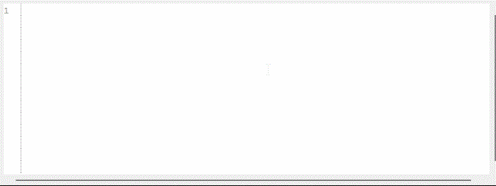
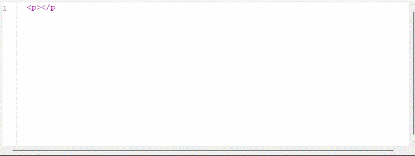
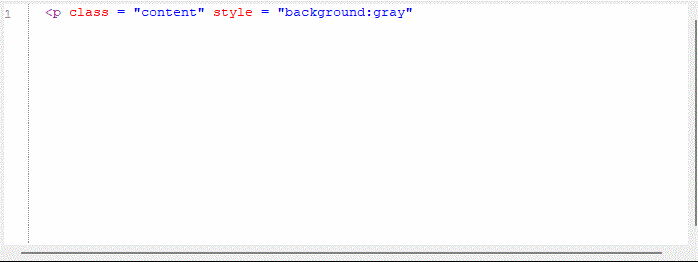
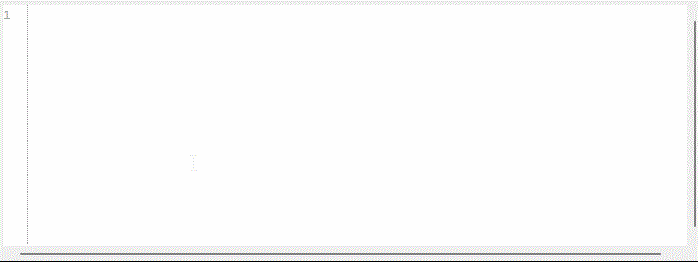

最近在用ISharpCode.TextEditor做了个东西，但是发现网上似乎还没有用这个做的HTML自动补全，于是我做了个简单的。
先是从网上搜到了这篇Stackoverflow的文章，但是没想到人家是用正常的RichTextbox做的，虽然思路相似，但是无法直接搬过来用。这个最佳答案也不知道怎么选的。
那我们自己写一个：
先是它的初始化，我们用它的KeyUp事件，这个最简单，但是也有坑！
如果你仔细看过代码就不免有疑问，为什么我要代码手动去绑定KeyUp这个事件？直接窗口事件那里绑定不久好了？
答：我绑定的是
textEditorControl1.ActiveTextAreaControl.TextArea，它这个组件是由三个分组件组成的，如果你去窗口那里绑定，会失效。当时调试了好久才发现这个问题。
第一代：最简单的版本：
首先我们先判断是不是按的功能键，如果是的话直接返回。为啥呢？看下面不放判断代码的GIF：
只会我们判断它输入的是不是>，如果是，就自动补全
但是问题也随之而来，见下面的GIF：
 这个问题很好解决，我们只需要在获取的HTML标签里面看看有没有/就行了：
如果没有，再添加；如果有了，就不添加了。
这里我还考虑了一些其它的问题，比如如果一个用户正在输入类似于class = "XXX"这种情况，然后再闭合这个标签，但是他输入的时候使用了>怎么办呢？那样子的话整个会直接自动闭合。
"数量：如果数量为奇数，那么他正在引号内输入文本，如果为偶数，则已经闭合：
那么一个新的问题会随之而来：他输入了这些属性，我们闭合的时候按照之前的代码会出现类似于以下GIF的效果
 解决方案也很简单：我们试图寻找它第一个空格，如果找到就substring一下。 同时，我们也要防止他输入的属性里面有<干扰我们判断Tag是什么。
至于那些特殊的不需要补全HTML标签，如<br>和<input>，如果有需要可以自己添加一句判断是否为这些元素。
那么到这里，我们的一个简单的HTML自动补全就做好了！完整代码见下：
GIF效果：
 窗口绑定： 事件处理：